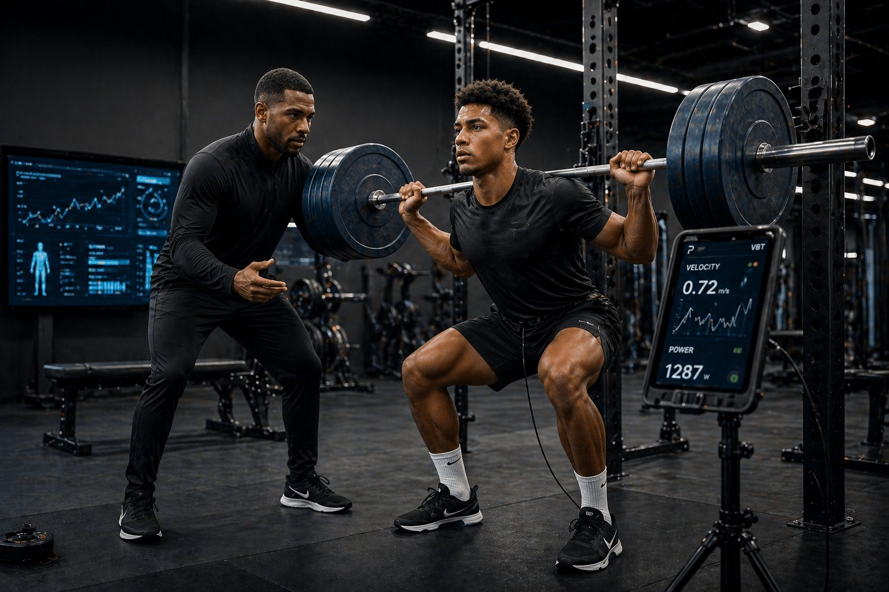

i.
Préparation physique
& planification athlétique
La préparation d'un footballeur de haut niveau ne se réduit pas à de la musculation ou à du cardio. C'est une science précise qui articule force, vitesse, explosivité, endurance, mobilité — chacune périodisée selon le calendrier de matchs, la position sur le terrain, l'histoire physique du joueur.
Notre méthodologie est issue de la périodisation tactique pratiquée dans les grands championnats. Elle est entièrement individualisée, et conçue pour s'articuler en complément du travail collectif réalisé en club.
·
Plan athlétique annuel personnalisé, périodisé par bloc
·
Travail force, vitesse, explosivité adapté au poste
·
Suivi de la charge : signaux faibles, fenêtres de surcharge
·
Coordination avec votre préparateur physique de club